2.5 Validating with JOSM
This section provides:
- An overview of Validation in JOSM, including presentation slides
- Step-by-step instructions for practicing validation in JOSM
The following materials are designed to assist project managers and others leading trainings and workshops. However, this material is also suitable for individuals interested in learning how to validate OSM data in JOSM.
Overview
Validation is a process of checking the data quality (in this case, map data quality) for accuracy, consistency, completeness and anomaly. Validation is important to maintain the quality of OSM data. When checking for accuracy, you need to make sure that the map data is aligned with the imagery and is correct in terms of geometry. For consistency, make sure that all mapped objects are consistent in shape. For example, when you found a residential area, make sure all the buildings are consistently traced and orthogonalized.
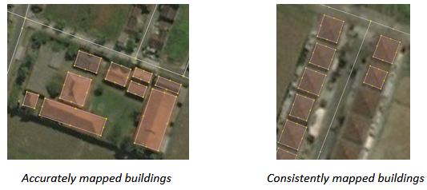
For completeness, it depends on what information you want to collect when mapping and what mapping method is used. Information collected using remote mapping method would be different with the information collected by conducting field survey. Information collected using remote mapping method will be very limited since you only have satellite imagery and gpx tracks available as reference. For anomaly, make sure there is no abnormal looking mapped objects. See the picture below, the mapped buildings on the left tends to be smaller than the mapped buildings on the right. After carefully checking the imagery, it turns out that the smaller buildings are actually tombs that are mapped as buildings.
While light validation can be completed using iD Editor, HOT recommends that detailed validation be completed using JOSM.
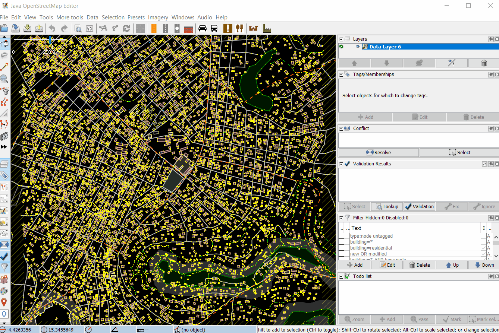
Resources and Training Materials
This section features a selection of resources targeted at project managers, trainers, or even self-learners on the topic(s) outlined above.
 The following presentation(s) can be used to lead a training or workshop.
The following presentation(s) can be used to lead a training or workshop.
 The following section is designed to serve as self-paced material that can be used both during trainings, and by self-guided learners.
The following section is designed to serve as self-paced material that can be used both during trainings, and by self-guided learners.
Practice Validation
The following activity covers the process of validating bad OSM data in JOSM. This activity uses an example file that can be downloaded here [2].
Skills and Technology Needed
- Computer
- Internet connection (for data download)
- OSM account
- JOSM
- Example .osm file
Estimated time for completion: 1 hour
Objectives:
- To be able to understand validation process for OSM data
- To be able to perform validation using Validation Tools on JOSM
- To be able to fix commonly error, warning and mistake found during validation
1. Opening OSM Data
After successfully downloaded sample data, open file validation_sample.osm into your JOSM by following these steps:
- Click menu File ➝ Open

JOSM Menu File
- Go to your directory where you save validation_sample.osm. Select the file validation_sample.osm and then click Open.

Opening an osm file on JOSM
- After opening the exercise file, your JOSM will look like this:

Exercise file on JOSM
2. Using JOSM Validation Tools
JOSM provides a built-in validator that checks and fixes invalid map data called Validation Tools. After checking for accuracy, consistency, completeness and anomaly, run this validation tools so that the map data is perfectly valid. To get started with the Validation tools, you need to activate the Validation Results Windows by following these steps:
- Click menu Windows ➝ Validation Results
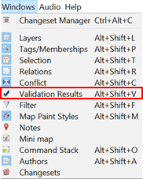
Windows menu on JOSM
- Validation results Windows will appear on the left side of your JOSM

Validation results Windows
After activating the Validation Results Windows, now you can start validation using JOSM Validation Tools. Download OSM data first using either Slippy Map or Tasking Mananger, then you can click the Validation button in the Validation Results Windows. Let’s use OSM data sample for exercise.
- To run validation on all the data in the current data layer, which is validation_sample.osm, make sure that there is no data selected. Then, click Validation button in the Validation Results Windows. Once the validation process is finished, Validation Results Windows will be filled with listed errors and warnings. The amount of errors and warnings found depends on the quality of the data. For example, on this OSM data sample, you will find one error and twenty one warnings.
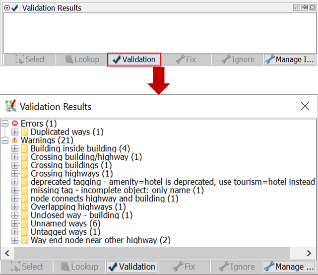
Validation Results from OSM Data Sample
- A new layer called Validation errors will also be added to the Layers Windows. This layer will highlight the errors and warnings found - red highlight for errors and yellow highlight for warnings.
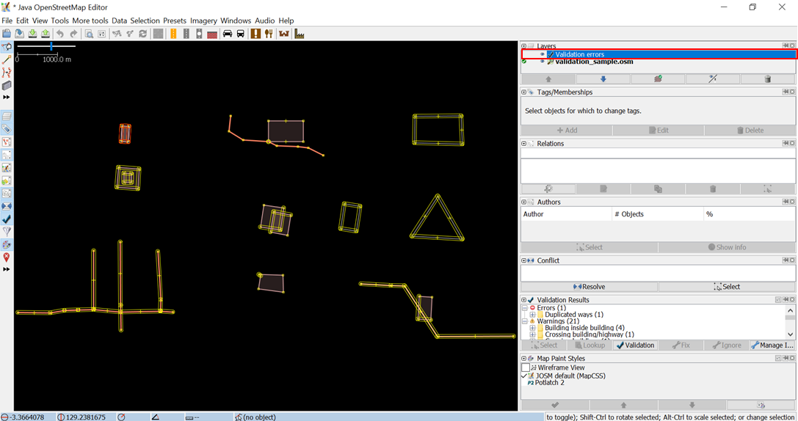
Highlighted errors and warnings
3. Fixing Errors and Warnings
Errors are important to fix. Do not ignore errors. If you have errors on your OSM data, you won’t be able to upload it into OSM Server until you fix the errors. Some errors can be fixed automatically using the Fix button on Validation Results Windows. Warnings are problems that are important to fix, but in some cases, such as “Unnamed Ways”, they are tolerable. Mostly, warning should be fixed manually. Now, let’s try to fix errors and warnings found on validation_sample.osm. There are one error and twenty one warnings found on validation_sample.osm. They are:
- Error: Duplicated ways (1)
- Warning: Building inside building (4)
- Warning: Crossing building/highway (1)
- Warning: Crossing buildings (1)
- Warning: Crossing highways (1)
- Warning: deprecated tagging - amenity=hotel is deprecated, use tourism=hotel instead (1)
- Warning: missing tag - incomplete object: only name (1)
- Warning: node connects highway and building (1)
- Warning: Overlapping highways (1)
- Warning: Unclosed way - building (1)
- Warning: Unnamed ways (6)
- Warning: Untagged ways (1)
- Warning: Way end node near other highway (2)
Now, let’s fix all the errors and warnings one by one.
3.1 Fixing Error: Duplicated ways
Duplicated ways error come up when there are ways that duplicate. This is usually caused by unstable internet connection when uploading OSM data into OSM server. Initially, to fix errors or warning, you should select the error or warning you want to fix. Go to the Duplicated ways error in the Validation Result Windows, click the + icon so that it looks like the picture below.
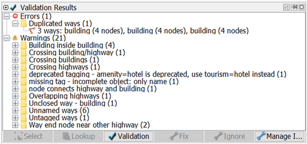
Duplicated objects on Validation Results
Select the objects where it is duplicated and Right-click ➝ Zoom to problem to zoom and see the duplicated objects. Your map canvas will zoom in to the duplicated objects. Fortunately, duplicated ways can be automatically fixed. After selecting the duplicated objects, click Fix. Voila, your error is fixed!

Zooming to Error: Duplicated ways
3.2 Fixing Warning: Building inside building
Building inside building warning come up when there is a building object inside another building object. To fix it, go to the building inside building warning in the Validation Results Windows, click the + icon so that it looks like the picture below.

Building inside building on Validation Results
Select the objects listed under the warning Building inside building and Right-click ➝ Zoom to problem to zoom and see the objects. Your map canvas will zoom in to the objects.

Zooming to Warning: Building inside building
Most of warning should be fixed manually. To fix building inside building, simply delete one of the buildings. To decide which one to be deleted, please take a look at the imagery and carefully decide which one to be deleted. Voila, you just fixed a building inside building.
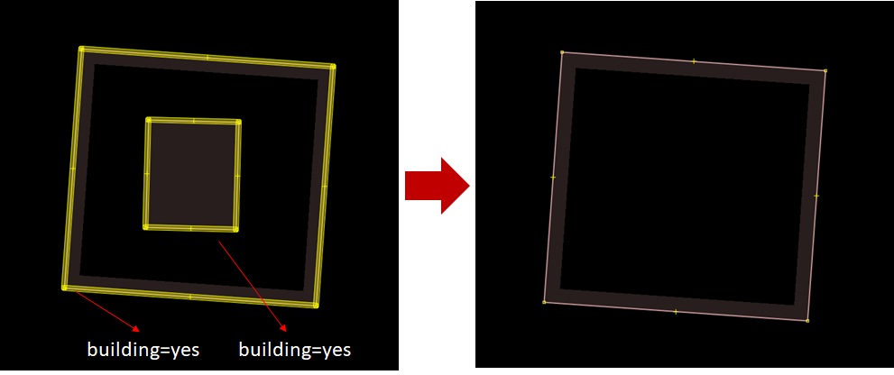
Fixing a building inside building warning
3.3 Fixing Warning: Crossing building/highway
Crossing building/highway come up when there is a building crossing with highway. To fix it, go to the crossing building/highway warning in the Validation Results Windows, click the + icon so that it looks like the picture below.
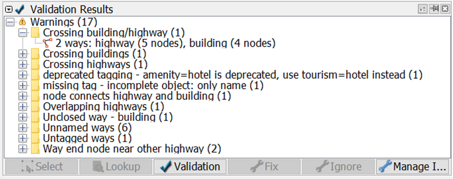
Crossing building/highway on Validation Results
Select the objects listed under the warning Crossing building/highway and Right-click ➝ Zoom to problem to zoom and see the objects. Your map canvas will zoom in to the objects.

Zooming to Warning: Crossing building/highway
To fix crossing building/highway, simply move one of the crossed objects, either the building or the segment/node of the highway. To decide which object that should be moved, please take a look at the imagery.

Fixing a crossing building/highway warning
3.4 Fixing Warning: Crossing buildings
Crossing buildings warning come up when there are two or more buildings overlapped with each other. To fix it, go to the crossing buildings warning in the Validation Results Windows, click the + icon so that it looks like the picture below.

Crossing buildings on Validation Results
Select the objects listed under the warning Crossing buildings and Right-click ➝ Zoom to problem to zoom and see the objects. Your map canvas will zoom in to the objects.

Zooming to Warning: Crossing buildings
To fix crossing buildings, simply move one of the overlapped buildings so that they wont be overlapping anymore. To decide which buildings that should be moved, please take a look at the imagery.
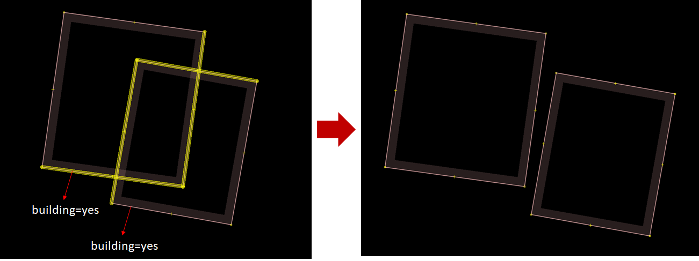
Fixing a crossing buildings warning
3.5 Fixing Warning: Crossing highways
Crossing highways warning come up when there are highways that cross each other with no crossing node. To fix it, go to the crossing highways warning in the Validation Results Windows, click the + icon so that it looks like the picture below.
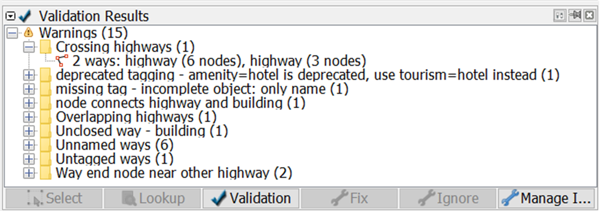
Crossing highways on Validation Results
Select the objects listed under the warning Crossing highways and Right-click ➝ Zoom to problem to zoom and see the objects. Your map canvas will zoom in to the objects.

Zooming to Warning: Crossing highways
To fix crossing highways, simply add a crossing node in the highway intersection. To add node at intersection, you can use JOSM additional tools, but first you have to activate plugin utilsplugins2. You can go to menu **Preferences **➝ Plugins, search for utilsplugins2 and give a check for utilsplugin2.

Activating plugin utilsplugins2
To add node at intersection, select the two crossing highways, and go to menu More tools ➝ Add nodes at intersections. And voila, your crossing highways now have a crossing node.
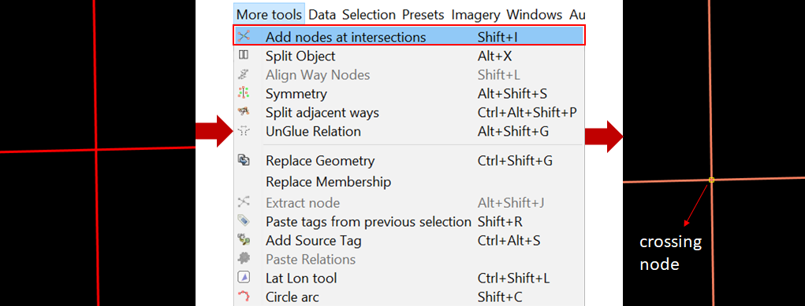
Adding node at intersection
3.6 Fixing Warning: deprecated tagging
Deprecated tagging warning come up when there is an object or more in your OSM data that used deprecated tagging. To fix it, go to the deprecated tagging warning in the Validation Results Windows, click the + icon so that it looks like the picture below.
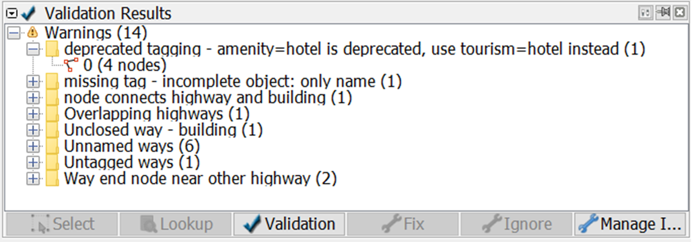
Deprecated tagging on Validation Results
Select the objects listed under the warning deprecated tagging and Right-click ➝ Zoom to problem to zoom and see the objects. Your map canvas will zoom in to the objects.
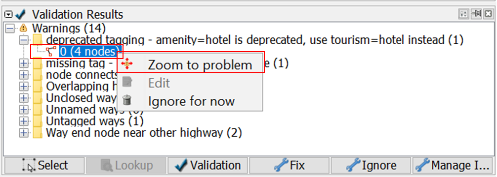
Zooming to Warning: deprecated tagging
Fortunately, deprecated tagging can be fixed automatically using Fix button. After selecting the object that has deprecated tagging, press the **Fix **button. JOSM will automatically change the deprecated tag into the new one.

Fixing deprecated tagging
3.7 Fixing Warning: missing tag
Missing tag warning come up when there is one or more objects that have no tag or the tag is incomplete. To fix it, go to the missing tag warning in the Validation Results Windows, click the + icon so that it looks like the picture below.
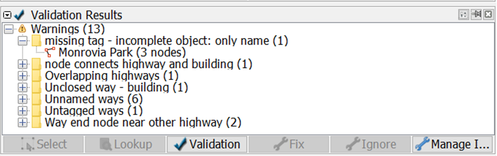
Missing tag on Validation Results
Select the objects listed under the warning missing tag and Right-click ➝ Zoom to problem to zoom and see the objects. Your map canvas will zoom in to the objects.
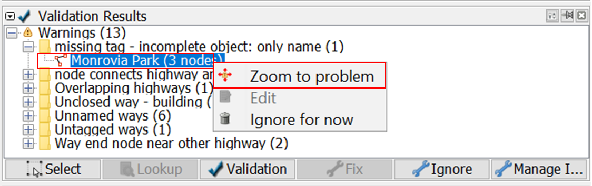
Zooming to Warning: missing tag
In this case, the object “Monrovia Park” only has tag name. It does not have the tag that identify it as park. What you have to do is simply add a tag to define that it is a park, named Monrovia Park. To add tag, click menu Presets ➝ Search preset… and search for Park. Select one that suits the kind of park you map, in this case you can select Geography/Landuse/Park, then click Select. Leave the name as is, then click Apply Preset.
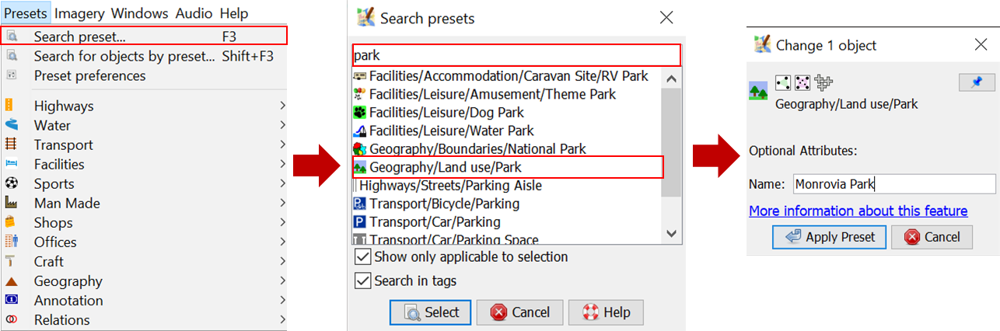
Adding tag
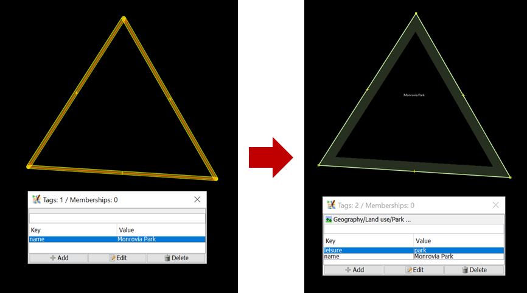
Fixing missing tag warning
3.8 Fixing Warning: node connects highway and building
Node connects highway and building warning come up when there is a building node connects with highway. To fix it, go to the node connects highway and building warning in the Validation Results Windows, click the + icon so that it looks like the picture below.
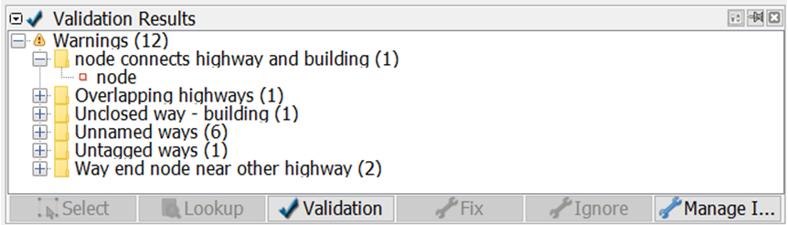
Node connects highway and building on Validation Results
Select the objects listed under the warning node connects highway and building and Right-click ➝ Zoom to problem to zoom and see the objects. Your map canvas will zoom in to the objects.
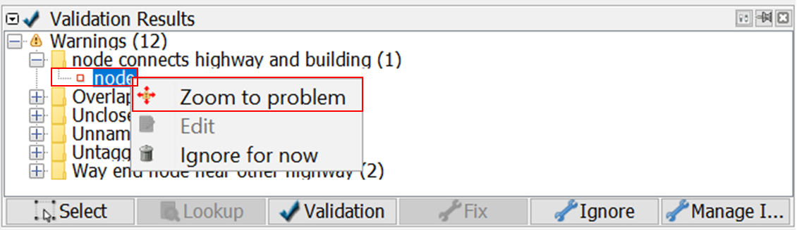
Zooming to Warning: Node connects highway and building
To fix this, simply separate the connected nodes by selecting the connected nodes first then click menu Tools ➝ Unglue Ways or press G on keyboard for shortcut. After separating the connected nodes, keep in mind to move either the whole building or the highway’s node since both nodes are still overlapping.

Zooming to Warning: Node connects highway and building

Fixing node connects highway and building warning
3.9 Fixing Warning: Overlapping highways
Overlapping highways come up when there are highways overlapping each other. To fix it, go to the overlapping highways warning in the Validation Results Windows, click the + icon so that it looks like the picture below.
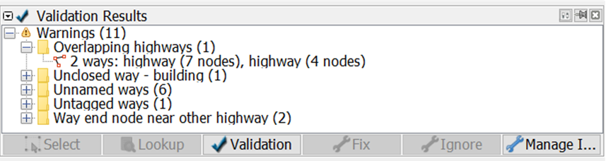
Overlapping highways on Validation Results
Select the objects listed under the warning overlapping highways and Right-click ➝ Zoom to problem to zoom and see the objects. Your map canvas will zoom in to the objects.
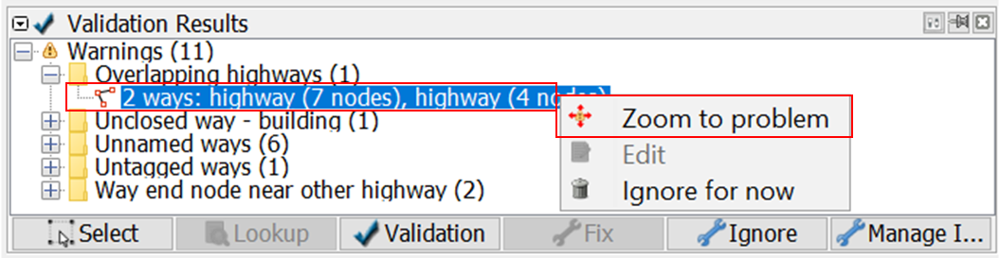
Zooming to Warning: Overlapping highways
To fix this warning, firstly you should split the overlapped segment of the highway. Select one end node where the highways are overlapped, then click menu Tools ➝ Split way or press P on keyboard for shortcut. Selet the other end node where the highways are overlapped, and then menu Tools ➝ Split way or press P on keyboard again. Now the overlapped segment have splitted. All you have to do now is to delete the overlapped segment by selecting the segment and then press delete on your keyboard.

Fixing overlapping highways warning
3.10 Fixing Warning: Unclosed way - building
Unclosed way - building warning come up when there is one or more buildings drawn as unclosed polygon. This happens when you draw building manually using node tools without building tools and the first node and the last node are not merged. To fix it, go to the unclosed way - building warning in the Validation Results Windows, click the + icon so that it looks like the picture below.

Unclosed way - building on Validation Results
Select the objects listed under the warning unclosed way - building and Right-click ➝ Zoom to problem to zoom and see the objects. Your map canvas will zoom in to the objects.
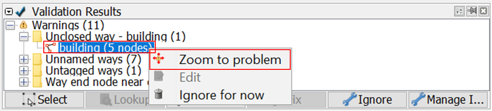
Zooming to Warning: Unclosed way - building
To fix this, select the first node and the last node of the building and merge it by clicking menu Tools ➝ Merge Nodes or pressing M on keyboard. And voila, now your building is a closed polygon.

Fixing unclosed way - building warning
3.11 Fixing Warning: Unnamed ways
Unnamed ways warning come up when there is one or more highways (main road) that do not have names. This warning is one of the tolerable warning, so you can just ignore this. If you know the name of the road, you can add the road’s name by adding tag name to the road. However, if you do not know the name, please just leave it as is rather than giving a random name that could be misleading. To ignore this warning, you can just leave it as is or you can also put it on your Ignore list so that this warning does not come up when you perform validation in the future. Click the “Unnamed Ways” warning in the warning list, then click Ignore and click Whole Group.

Putting a warning into Ignore List
You can always put it back to your warning list if you change your mind, so that this warning will come up again when you perform validation by clicking Manage Ignore, then right-click on the warning you want to put back and choose Don’t Ignore.
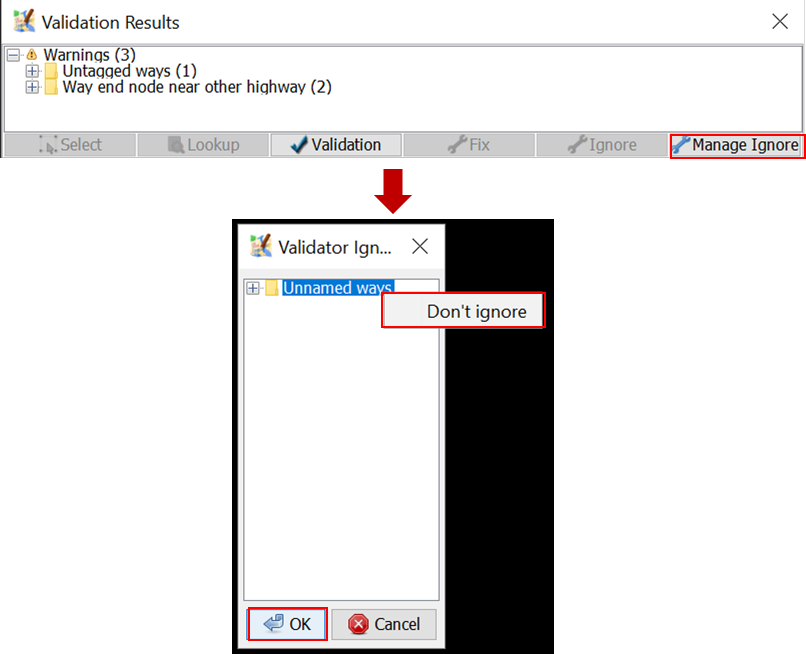
Managing Ignore List
3.12 Fixing Warning: Untagged ways
Untagged ways warning come up when there is untagged object. To fix it, go to the untagged ways warning in the Validation Results Windows, click the + icon so that it looks like the picture below.

Untagged ways on Validation Results
Select the objects listed under the warning untagged ways and Right-click ➝ Zoom to problem to zoom and see the objects. Your map canvas will zoom in to the objects.

Zooming to Warning: Untagged ways
To fix it, just simply add tag/preset to the object. Please take a look at the imagery to decide what tag to add to the object. Select the object and then go to menu Preset and select the tag that suits the object. For example, if this object turns out to be hospital, add tag/preset hospital.
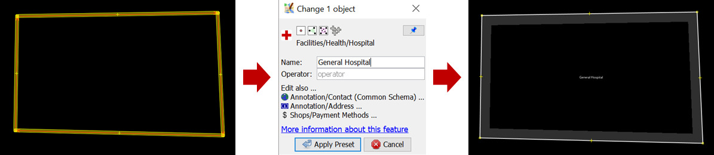
Fixing untagged ways warning
3.13 Fixing Warning: Way end node near other highway
To fix way end node near other highway, go to the way end node near other highway in the Validation Results Windows, click the + icon so that it looks like the picture below.
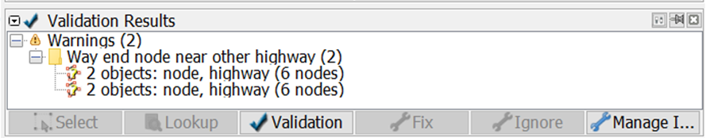
Way end node near other highway on Validation Results
Select the objects listed under the warning untagged ways and Right-click ➝ Zoom to problem to zoom and see the objects. Your map canvas will zoom in to the objects.

Zooming to Warning
To fix it, select the end node and then activate Draw mode by pressing A on keyboard. Then, draw the road so that it is connected to the road nearby.
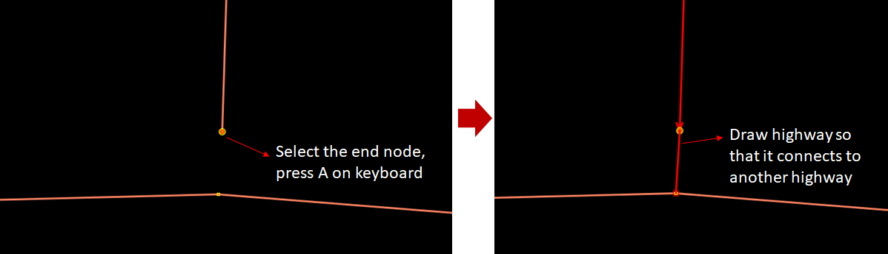
Fixing Warning
Congratulations! Now you have finished fixing errors and warnings in the validation_sample.osm. Hopefully after completing this exercise, you can perform validation for OSM data. More validator means better OSM data quality.